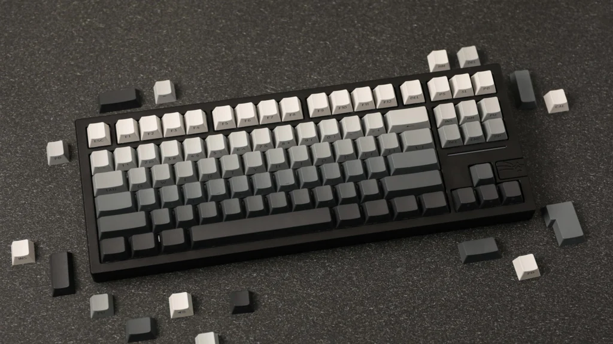

The Ultimate Beginner's Guide to Custom Mechanical Keyboards
So, you’ve heard the "thock", seen the colorful setups on Instagram, and decided it’s time to ditch that membrane office keyboard. Welcome to the rabbit hole. Building a custom mechanical keyboard is one of the most rewarding tech hobbies out there.
1. The Anatomy of a Keyboard
Before you buy anything, you need to understand what goes inside. A custom board isn't just one piece; it's a sandwich of components.
- Case: The housing. Can be plastic or metal.
- PCB: The brain. Hot-swap PCBs allow you to plug switches in like Lego.
- Plate: Holds the switches in place.
- Stabilizers: Essential for big keys (Spacebar, Enter).
2. Choosing Your Form Factor
Size matters. Do you need a number pad for Excel? Or do you want more mouse space for gaming?
60% Layout
No F-row, no arrows, no numpad. Extremely compact.
65% & 75% Layouts
The sweet spot. You get arrow keys and (on 75%) the Function row.
Tenkeyless (TKL) Layout
The standard layout minus the number pad.
Full Size Layout (100%)
The traditional 104-key layout you grew up with. Includes the number pad.
3. Switches: The Heart of the Feel
This is the most subjective part. Switches are generally color-coded:
- Linear (Red/Black/Yellow): Smooth straight down.
- Tactile (Brown/Clear/Holy Panda): A physical "bump" halfway down.
- Clicky (Blue/Green): A bump accompanied by a loud click.
4. Where to Buy (Malaysia & Global)
Finding parts can be tricky. Here is how to navigate the market.
- Shopee/Lazada: Great for budget parts like Akko switches.
- Local Proxies/Vendors: Mecha Store or Rebult Keyboards for premium items.
- Facebook Marketplace: The best place for second-hand GMK sets.
Conclusion
Your first build doesn't have to be perfect. Start with a budget hot-swap kit and enjoy the process. Happy building!